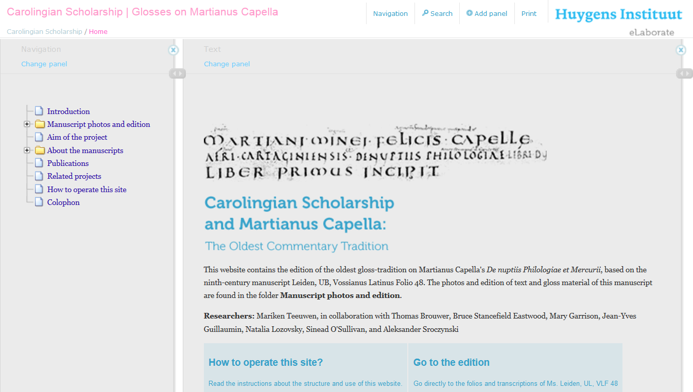
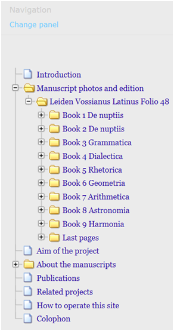
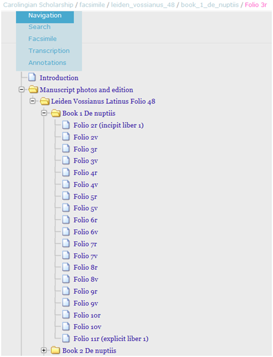

Carolingian Scholarship and Martianus Capella: The Oldest Commentary Tradition
Table of Contents
Abstract
This paper reviews a semi-diplomatic edition of the oldest gloss commentary on Martianus Capella's De nuptiis Philologiae et Mercurii, a popular fifth-century encyclopaedic allegory of the seven liberal arts. Based on and including facsimiles of a ninth-century manuscript from Leiden University Library (Vossianus Latinus Folio 48), the edition was produced collaboratively by various specialists. While it succeeds in providing full access to an important textual witness to a rich commentary tradition – the complex nature of which defies any attempts at capture in a print edition – the integration of a deeper critical analysis of the textual transmission and an augmentation of the material presented is still desirable.
Einleitung
Die Webseite Carolingian Scholarship and Martianus Capella bietet eine digitale semi-diplomatische Edition der aus dem 9. Jahrhundert stammenden Handschrift Leiden, Universitätsbibliothek, Vossianus Latinus Folio 48. Die Handschrift gilt als einer der vier wichtigsten Textzeugen für die im Zuge der karolingischen Bildungsreformen einsetzenden umfangreichen Kommentierungen der ‘Hochzeit der Philologie mit Merkur’ – De nuptiis Philologiae et Mercurii. Das Werk selbst war im 5. Jahrhundert von dem heidnischen Autor Martianus Capella verfasst worden und erfreute sich als allegorisch-enzyklopädisches Lehrstück das gesamte Mittelalter hindurch großer Beliebtheit, von der auch die späteren Kommentierungen durch namhafte Autoren wie Johannes Scotus Eriugena und Remigius von Auxerre zeugen. In der mythologischen Rahmenhandlung gibt Philologia (als personifizierte Gelehrsamkeit) ihrem Bräutigam Merkur (für die Beredsamkeit stehend) die sieben freien Künste als Brautgaben dar (Buch I-II), die dann im Einzelnen vorgestellt und ausführlich beschrieben werden (Buch III-IX).

- Buch I-II (Hochzeitserzählung): S. O'Sullivan (Queen's University Belfast).
- Buch III (Grammatik): M.J. Teeuwen (Huygens ING, Den Haag), unter Mitarbeit von Iris Savelkouls und A.P. Orbán (beide Universiteit Utrecht).
- Buch IV (Dialektik): M. Garrison (University of York) und M.J. Teeuwen, Transkript; Thomas Brouwer (Universiteit Leiden), Korrektur und Emendation.
- Buch V (Rhetorik): M. Garrison und M.J. Teeuwen, Transkript; Aleksander Sroczynski (Universiteit Utrecht), Korrektur und Emendation.
- Buch VI (Geometrie): N. Lozovsky (University of California, Berkeley).
- Buch VII (Astronomie): B.S. Eastwood (University of Kentucky).
- Buch VIII (Arithmetik): M.J. Teeuwen, Transkript; J.-Y. Guillaumin (Université de Franche-Comté), Korrektur, Emendation und Kommentar.
- Buch IX (Musik): M.J. Teeuwen.
Die hier zu besprechende digitale Textausgabe erscheint auf der vom Huygens Institut in Den Haag entwickelten und für verschiedene Editonsprojekte angewendeten Publikationsplattform eLaborate. Neben der eigentlichen Edition hat das Forschungsprojekt noch diverse wissenschaftliche Publikationen zum weiteren Themenkomplex des karolingischen Bildungswesens hervorgebracht.2
Ein wichtiges Ergebnis der im Rahmen des Projektes betriebenen Forschungen besteht nach Auffassung der Herausgeberinnen darin, dass sich die hier edierten frühesten Glossenkommentare nicht, wie es die frühe Forschung mehrfach unternahm, auf einen einzelnen Autor zurückführen lassen, sondern in der Zeit zwischen 820 und 840 in regem Austausch der an den karolingischen Klöstern und Höfen diskutierenden und kommentierenden Gelehrten entstanden sind. Auch das ist ein Grund dafür, dass sich die Edition an der Fassung einer bestimmten Handschrift und nicht an einem zu rekonstruierenden Autorentext ausrichtet.
Das Editionsprojekt wurde von Mai 2003 bis Mai 2007 durch die Nederlandse Organisatie voor Wetenschappelijk Onderzoek (NWO) finanziell getragen, am Huygens-Institut der Koninklijke Nederlandse Akademie van Wetenschappen (KNAW) gehosted und enstand in Kooperation mit einer Forschergruppe der Geisteswissenschaftliche Fakultät der Universität von Utrecht. Seit November 2008 ist es online und ohne Zugriffsbeschränkungen zugänglich; die Urheberrechte behält sich das Huygens-Institut vor. Nach einigen Revisionen versteht sich die Webpräsentation bis heute als work in progress: ‘The content is unfixed, and regular updates and revisions are constantly published.‘ Allerdings ist für den Leser bzw. User nicht nachvollziehbar, welche Änderungen zu welchem Zeitpunkt seit der Erstveröffentlichung bis heute vorgenommen worden sind. Als Datum einer letzten Aktualisierung ist August 2011 angegeben.
Inhalte und Methoden
Die Edition bietet schwarz-weiß Faksimiles der zugrunde liegenden Handschrift von leider nur mäßiger Qualität. Hochauflösende Farbphotographien derselben Handschrift, die auf einem Online-Portal der Leidener Universitätsbibliothek frei zugänglich sind (Socrates 2009), konnten oder durften bedauerlicherweise nicht in die Edition eingebunden werden. Ein Hinweis auf deren Existenz (mit derzeitig nicht funktionsfähigem Link) findet sich bei dem jeweils ersten Schwarz-Weiß-Faksimile eines jeden Buchs. Desweiteren liefert Mariken Teeuwen eine sehr detaillierte Beschreibung der Handschrift auf dem neuesten Stand der Forschung ab und spricht ihr wohl zu Recht eine ‘große Persönlichkeit’ zu, da sie eine Vielzahl von Anmerkungen u.a. von der Hand des Bischofs Ratherius von Verona aus dem 10. Jh. enthält. Eine kürzere und eine ausführlichere allgemeine Einleitung zu Projekt und Edition, eine Bibliographie sowie eine Bedienungsanweisung und ein ‘Kolophon’ mit grundlegenden Informationen und einer Zitationsempfehlung erlauben dem Leser eine sachgerechte Nutzung der Webseite und führen so fachmännisch wie allgemeinverständlich in die Projektziele und Editionsinhalte ein.

Der Text ist gemäß seiner Werkstruktur in die einzelnen Bücher unterteilt und innerhalb der einzelnen Bücher auf der Ebene der einzelnen Handschriftenseiten. Zusätzlich ist der Haupttext mit der für die Martianus-Editionen maßgebliche Paragraphenzählung (§§ 1-1000) versehen. Die Transkription des Haupttextes ist zeilengetreu, so dass der Vergleich mit der Handschrift relativ leicht fällt. Die Transkription selber wird als semi-diplomatisch bezeichnet, d.h. Abkürzungen sind stillschweigend aufgelöst, Interpunktion sowie Groß- und Kleinschreibung folgt modernen Konventionen. Die Behandlung von u und v ist uneinheitlich. Mal wird positionsbedingt nach v normalisiert (uinclis wird vinclis; foues wird foves; vel), mal nicht (uicissim; Iouis; uel). e und e-caudata werden i.d.R. als ae wiedergegeben, wo sie auf Diphtonge zurückgehen. Doch sind auch hier Ausnahmen zu finden (bspw. grece oder celum). Tilgungen durch Expunktion oder Rasur werden i.d.R. als Streichungen wiedergegeben, Superskripte (innerhalb des Haupttextes oder innerhalb des Kommentartextes) werden auch als Superskripte ausgegeben. Die jeweils zugrundeliegenden Rohdaten werden nicht mitgeliefert. Auch werden keine Aussagen darüber gemacht, in welchem Format die digitalen Texte vorliegen.

Davon abgesehen bietet das hier eingesetzte Textpräsentationstool eLaborate eine intuitive und funktionale Navigation, eine flexible Ansichtseinstellungen sowie Print- und Suchfunktionen. Die Navigation erfolgt innerhalb einer Ordnerstruktur, die auch in der URL abgebildet ist und eine einfache Orientierung und bis auf die Ebene der Handschriftenseiten genaue Adressierung ermöglicht. Auch eine Adressierung der auf jedem Folio durchnummerierten Kommentaranmerkungen ist grundsätzlich möglich, z.B.: http://martianus.huygensinstituut.knaw.nl/path/facsimile/leiden_vossianus_48/book_2_de_nuptiis/folio_11r#a-84.
Doch erscheint der Editionstext der angesteuerten Glosse bei höheren Nummern (wie hier Glossen-Nr. 84 auf Folio 11 in Buch II) nicht genau im Anzeigefenster und wird auch nicht hervorgehoben. Eine alternative Zitationsweise über die Werkstruktur wird technisch nicht unterstützt, d.h. die Paragraphen sind nicht direkt ansteuerbar; der Verweis auf die Glosse zu einem bestimmten Lemma innerhalb eines bestimmten Paragraphen ist aber nachvollziehbar. Im oben genannten Fall also beispielsweise: De nuptiis II,102, ad ‘numeri’.
Eine standardgemäße Suchfunktion umspannt wahlweise die gesamte Edition oder nur die aktuelle Seite. Suchergebnisse werden nach Treffern in ‘Texten’ (i.e. begleitende Texte), ‘Transkriptionen’ (i.e. Haupttext) und ‘Annotationen’ (i.e. Glossen) gruppiert. Zusätzlich gibt es eine Fuzzy Search, die insbesondere für das Durchsuchen der quellennahen Transkription von größtem Nutzen ist, da sie orthographische oder grammatikalische Abweichungen bis zu einem gewissen Grad toleriert. Alternative Zugänge z.B. über Wortregister werden nicht geboten.
Fazit
Die Edition stellt sich selbst an die Seite anderer digitaler Editionen mittelalterlicher Glossenkommentare wie die der Glossen Ekkeharts IV. im Kodex Sangallensis 621, herausgegeben von Heidi Eisenhut und Max Bänziger, und die der alt-irischen und lateinischen Glossen im Priscian Kodex Sangallensis 904, transkribiert von Rijcklof Hofman und herausgegeben von Pádraic Moran.3 Daneben ist auch ein weiteres digitales Editionsunternehmen zu nennen, dass kurioserweise denselben Text, allerdings in einer späteren Handschrift zum Gegenstand hat und nach bereits länger zurückliegenden Ankündigungen seitens der Herausgeber zwischenzeitig versandet zu sein schien, schließlich aber doch zu einer digitalen Publikation gefunden hat: Die Glossen zu Martianus Capella im Codex 193 der Kölner Dombibliothek (Isépy und Posselt 2010).4 Eine inhaltliche oder technische Kooperation (nicht einmal in Form eines gegenseitigen Verlinkens) zwischen den beiden Martianus Capella-Editionen hat nicht stattgefunden. Gleichwohl bilden sie gemeinsam mit den vorgenannten Glosseneditionen allesamt wichtige Meilensteine auf dem Wege hin zu einer Etablierung und Optimierung wissenschaftlicher digitaler Editionen einer Textsorte, die einer für die mittelalterliche Bildungswelt so charakteristischen Rezeptions- und Kommentierungspraxis entspringen und die aufgrund ihrer komplexen und vielschichtigen Textlichkeit in Buchform immer nur auf unbefriedigende Weise wiederzugeben sind. Das Digitale bietet hier zweifellos vielversprechende Mittel und Wege, die es erlauben, dem Gegenstand gerechter zu werden und die Nutzbarkeit für den Leser und die Forschung zu erhöhen.
Vor diesem Hintergrund wirkt es nahezu ironisch und wie ein methodologischer Rückschritt, dass sich die an das hier besprochene Editionsprojekt anschließende und auf deren Ergebnissen aufbauende kritische Erschließung der gesamten Überlieferung der frühesten Glossenkommentare zu De nuptiis ausgerechnet in zwei Druckpublikationen der Reihe des Corpus Christianorum erfolgt. Ein erster Band, der die beiden ersten Bücher umfasst, ist bereits erschienen (O’Sullivan 2010). Die Veröffentlichung des zweiten Bandes mit einer semi-diplomatischen Edition der Bücher 3-9 ist in Planung.5 Die Übereinstimmung der 20 handschriftlichen Textfassungen scheint also – zumindest bei den ersten beiden Büchern – doch größer zu sein als deren Abweichungen untereinander, so dass eine integrative kritische Textfassung, die auf den Lesarten aller relevanten Textzeugen beruht oder diese doch mit einzubeziehen im Stande ist, als möglich und sinnvoll erachtet werden kann. Als Vorteile der Buchpublikation darf der professionelle Publikationsweg, das hohe Prestige der Reihe und die gesicherte Aussicht darauf, von der Fachforschung wahrgenommen und rezipiert zu werden, nicht gering geschätzt werden. Dass sich die Möglichkeiten und der zu gewärtigende Mehrwert einer fortschreitenden kritischen Aufbereitung der hier besprochenen digitalen Editionstexte durch die Bindung an den Verlag deutlich reduzieren, muss man insbesondere nach Auslaufen der Projektförderung billigend in Kauf nehmen. Die Wertschätzung der digitalen semi-diplomatischen Edition der Glossenkommentare zu De nuptiis fällt dadurch allerdings – zumindest in der Wahrnehmung der fachwissenschaftlichen Forschung – unweigerlich auf einen Stand, den man für gewöhnlich reinen Vorstudien beimisst.
Dabei bietet die digitale Edition auf ihrem derzeitigen Stand alle technischen und institutionellen Voraussetzungen für eine kritische Anreicherung: weitere Textschichten (weitere Transkripte, Übersetzungen etc.), textkritische Annotationen, Quellenverweise und Kommentare ließen sich an die bestehenden Inhalte anbinden. Eine ausgreifende Vernetzung mit externen Ressourcen etwa durch eine Einbindung der online verfügbaren Digitalisate weiterer Handschriften (z.B. Besançon, Bibliothèque Municipale, Ms. 5946, Leiden, Universiteitsbibliotheek, BPL 887, oder Köln, Dombibliothek, Codex 1938) würde den Nutzen der Edition auch und gerade im Vergleich zur Buchpublikation stark vermehren. Doch auch wenn sie bleibt, wie sie ist, stellt sie einen unverzichtbaren Beitrag zur textgeschichtlichen und kulturgeschichtlichen Erforschung karolingischer Glossenkommentare dar und eine wichtige Referenz bei Entwicklung digitaler wissenschaftlicher Editionsformen.
Bibliography
- Boethius in Early Medieval Europe – Commentary on The Consolation of Philosophy from the 9th to the 11th centuries. Faculty of English, University of Oxford. http://web.archive.org/web/20140413131114/http://www.english.ox.ac.uk/boethius/.
- eLaborate – Virtual Workspace for Social Sciences and humanities. Huygens Instituut http://web.archive.org/web/20140413131212/http://www.e-laborate.nl/nl/.
- Eisenhut, Heidi und Max Bänziger (Eds.), Die Glossen Ekkeharts IV. im Codex Sangallensis 621. Zürich und St. Gallen: 2005-2010. Accessed: 13.04.2014. http://orosius.monumenta.ch/.
- Isépy, Monika und Posselt, Bernd (Eds.), Die Glossen zu Martianus Capella im Codex 193 der Kölner Dombibliothek. Digitale Edition 2010. München: Ludwig-Maximilians-Universität 2010. http://web.archive.org/web/20140413131438/http://www.martianus.mueze.lmu.de/.
- - Die Glossen zu Martianus Capella im Codex 193 der Kölner Dombibliothek. Libelli Rhenani XV. Köln: Erzbischöfliche Diözesan- und Dombibliothek 2010.
- Lutz, Cora E. (Ed.), Dunchad Glossae in Martianum. Philological Monographs 12. Lancaster: American Philological Association 1944.
- O‘Sullivan, Sinéad (Ed.), Glossae aevi carolini in libros I-II Martiani Capellae De Nuptiis Philologiae et Mercurii. Corpus Christianorum Continuatio Medievalis (CCCM), 237. Turnhout: Brepols Publishers, 2010.
- Manitius, Max, Geschichte der lateinischen Literatur des Mittelalters. 3 vols. Handbuch der Altertumswissenschaften 9,2,1-3. München: C.H. Beck 1911–1931.
- Moran, Pádraic (Hg.), St Gall Priscian glosses. http://web.archive.org/web/20140413131736/http://www.stgallpriscian.ie/.
- Socrates. Digital Sources. Leiden: Ex Libris – Leiden University Libraries 2009. Accessed: 13.04.2014. https://socrates.leidenuniv.nl/.
- Teeuwen, Mariken, u. Sinéad O'Sullivan (Eds.). Carolingian Scholarship and Martianus Capella. Ninth-Century Commentary Traditions on 'De nuptiis' in Context. Cultural Encounters in Late Antiquity and the Middle Ages (CELAMA 12). Turnhout: Brepols Publishers 2011.
Notes
- Lutz weist den Kommentar der Autorschaft des irischen Bischofs Dunchad zu, der Anfang des 9. Jh.s in der Abtei von Sankt Remigius in Rheims gelehrt haben soll. Vgl. Manitius II/1 1911, 525f. ↑
- Siehe vor allem Teeuwen 2011. Informationen zu weiteren Druckpublikationen finden sich auf der Webseite. ↑
- Die Veröffentlichung der Ergebnisse eines weiteren Editionsprojekts – zu den Glossenkommentaren zu Boethuis‘ Consolatio Philosophiae – steht noch aus: Boethius in Early Medieval Europe – Commentary on The Consolation of Philosophy from the 9th to the 11th centuries. ↑
- Den Aussagen der Herausgeber gemäß, befindet sich die derzeitige Online-Fassung weiterhin in der Entwicklung. Unter derselben Herausgeberschaft ist 2010 auch eine Druckfassung erschienen. ↑
- Gemäß der Auskunft unter ‘Aim of the project‘: http://web.archive.org/web/20140413134558/http://martianus.huygensinstituut.knaw.nl/path/aim_of_the_project . ↑
- http://memoirevive.besancon.fr/ (Fol. 1: http://web.archive.org/web/20140413133751/http://memoirevive.besancon.fr/ark:/48565/a011324049259rplCx5). ↑
- https://socrates.leidenuniv.nl; weitere Textzeugen BPL87 & 38. ↑
- http://www.ceec.uni-koeln.de/. ↑
@article{carolingian_scholarship,
author = {Fischer, Franz},
title = {Carolingian Scholarship and Martianus Capella: The Oldest Commentary
Tradition},
journal = {RIDE – A review journal for digital editions and resources},
number = {1},
year = {2014},
doi = {10.18716/ride.a.1.1},
url = {https://doi.org/10.18716/ride.a.1.1},
}TY - JOUR
AU - Fischer, Franz
TI - Carolingian Scholarship and Martianus Capella: The Oldest Commentary
Tradition
T2 - RIDE – A review journal for digital editions and resources
IS - 1
PY - 2014
DA - 2014/06
DO - 10.18716/ride.a.1.1
UR - https://doi.org/10.18716/ride.a.1.1
PB - Institut für Dokumentologie und Editorik e.V.
LA - de
ER - Fischer, F. (2014). Carolingian Scholarship and Martianus Capella: The Oldest Commentary
Tradition. RIDE – A review journal for digital editions and resources, (1). https://doi.org/10.18716/ride.a.1.1Fischer, Franz. "Carolingian Scholarship and Martianus Capella: The Oldest Commentary
Tradition." RIDE – A review journal for digital editions and resources, no. 1, 2014. https://doi.org/10.18716/ride.a.1.1.Fischer, Franz. "Carolingian Scholarship and Martianus Capella: The Oldest Commentary
Tradition." RIDE – A review journal for digital editions and resources, no. 1 (2014). https://doi.org/10.18716/ride.a.1.1.